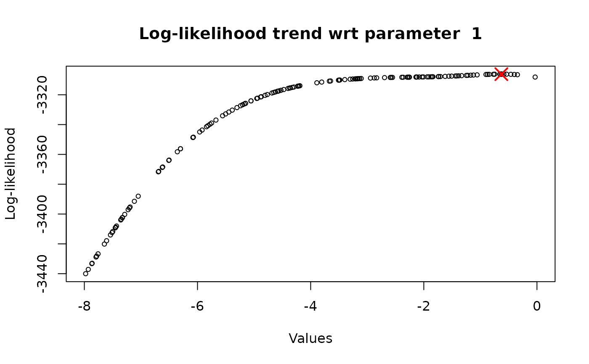
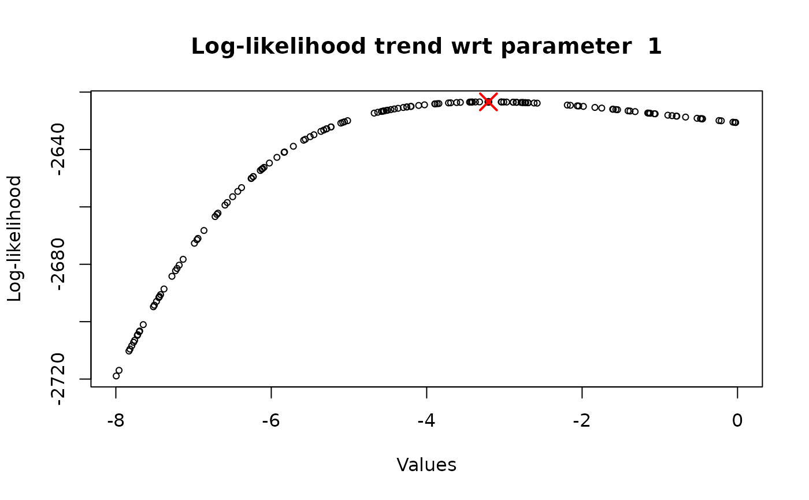
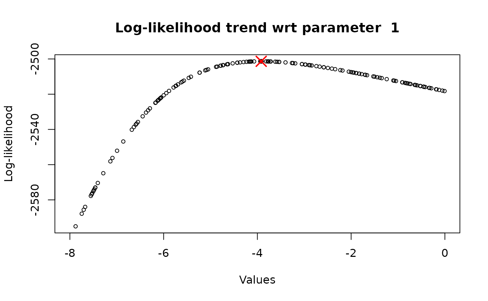
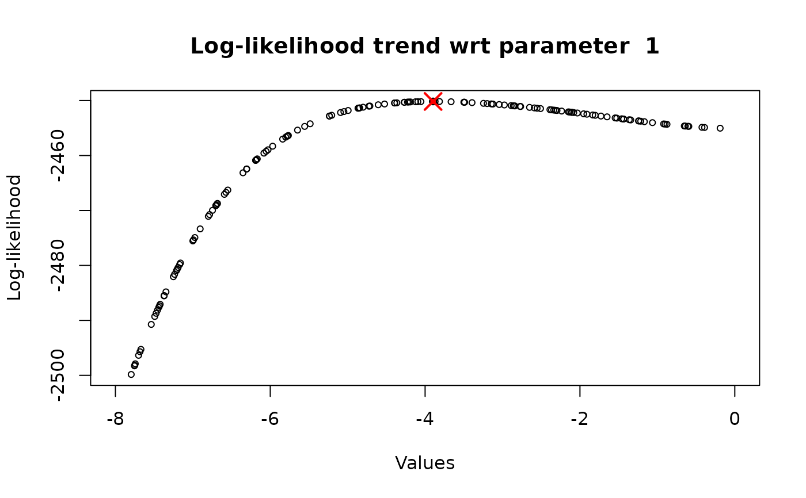
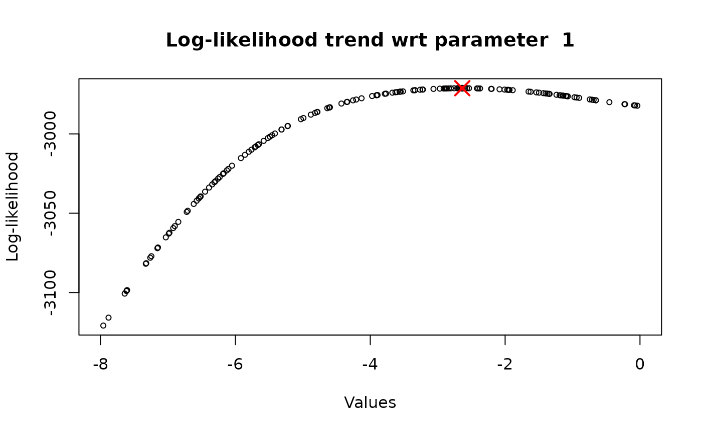

One-Dimensional Analysis of log-Likelihood Function
AdPaik_1D.RdFunction for studying the log-likelihood function from the point of view of a single parameter and, therefore, in a single direction. It performs both the optimization of the log-likelihood with respect to this parameter and the evaluation of the log-likelihood in several samples of the same parameter, while the other parameters can assume a constant assigned value or can vary in their range.
Usage
AdPaik_1D(
formula,
data,
time_axis,
index_param_to_vary,
flag_optimal_params = FALSE,
optimal_params = NULL,
categories_range_min,
categories_range_max,
n_iter = 5,
tol_optimize = 1e-06,
flag_plot = FALSE,
n_points = 150,
cex = 0.7,
cex_max = 0.8,
color_bg = "black",
color_max_bg = "red",
pch = 21
)Arguments
- formula
Formula object indicating the response variable, the covariates and the cluster variable.
- data
Dataset in which the variables of the formula object are located.
- time_axis
Partitioned time-domain.
- index_param_to_vary
Index of the parameter, in the parameter vector, with respect to which the log-likelihood function is maximized in a one-dimensional way. The index s provided to identify the parameter under consideration inside the vector, avoiding providing its name or value.
- flag_optimal_params
Are the other parameters extracted from the optimal vector of parameters? If so, the flag should be equal to TRUE. Otherwise, the flag is equal to FALSE.
- optimal_params
Vector of optimal parameters, determined through an entire multi-dimensional maximization of the log-likelihood function. The default value (NULL) indicates that no vector is provided and the parameters are randomly extracted in their range.
- categories_range_min
Vector containing the minimum value assumed by each parameter category.
- categories_range_max
Vector containing the maximum value assumed by each parameter category.
- n_iter
Number of times the one-dimensional analysis with respect to the indicated parameter must be executed. Default value is 5. See details for more information.
- tol_optimize
Tolerance used in the optimize R function for the one-dimensional optimization of the log-likelihood function.
- flag_plot
Logical value for plotting the trend of the log-likelihood function with respect to the parameter under consideration. A plot for each iteration (n_iter) is reported. Defaults to FALSE. Be careful that if the optimal parameters are provided, then the trend may be always the same and therefore it may be sufficient to set n_iter = 1. On the other hand, if optimal parameters are not provided, then it is recommended to impose a higher n_iter.
- n_points
Number of internal points in which the log-likelihood function must be evaluated, to plot it.
- cex
Dimension of the points in the plot.
- cex_max
Dimension of the optimal point in the plot.
- color_bg
Color used in the plot for the points.
- color_max_bg
Color used for the optimal point in the plot.
- pch
Shape to be used for the points.
Value
If the flag for the plot has been activated, the function returns both the plot of the one-dimensional log-likelihood function and a class S3 object. Otherwise, only a S3 object of class 'AdPaik_1D'. This class object is composed of:
numerical vector of length @n_iter containing the optimal estimated parameter.
numerical vector of length @n_iter containing the associated one-dimensional optimized log-likelihood value
Details
The one-dimensional analysis of the log-likelihood function can be performed in two ways, with two different aims and results:
Keeping fixed the other parameters (all the parameters in the vector, except for the one under consideration) to their optimal value (flag_optimal_params = TRUE), determined through the multi-dimensional optimization. In this way, the optimized value of the parameter coincides with the one get with the general and global approach and, therefore, there is no need to repeat this procedure several times (n_iter = 1). However, this approach is really useful if we want to check the trend the log-likelihood function and to observe if it increases, decreases or is constant.
Letting the other parameters vary in their range (flag_optimal_params = FALSE). The optimized parameter value will always assume a different value, because it depends on the value of the other parameters, and it is suggested to repeat the procedure several times (n_iter \(\geq\) 5), so that it is possible to identify a precise existence region for such parameter
Examples
# Consider the 'Academic Dropout dataset'
data(data_dropout)
# Define the variables needed for the model execution
formula <- time_to_event ~ Gender + CFUP + cluster(group)
time_axis <- c(1.0, 1.4, 1.8, 2.3, 3.1, 3.8, 4.3, 5.0, 5.5, 5.8, 6.0)
eps <- 1e-10
# \donttest{
# Identify a parameter existence range
categories_range_min <- c(-8, -2, eps, eps, eps)
categories_range_max <- c(-eps, 0.5, 1 - eps, 1, 10)
index_param_to_vary <- 1
analysis_1D_opt <- AdPaik_1D(formula, data_dropout,
time_axis, index_param_to_vary,
flag_optimal_params = FALSE,
optimal_params = NULL,
flag_plot = TRUE,
categories_range_min, categories_range_max,
n_iter = 5)





# or Study the log-likelihood behaviour
categories_range_min <- c(-8, -2, eps, eps, eps)
categories_range_max <- c(-eps, 0.4, 1 - eps, 1, 10)
index_param_to_vary <- 14
# Call the main model
result <- AdPaikModel(formula, data_dropout, time_axis,
categories_range_min, categories_range_max)
#> Error in while (r <= n_run & actual_tol_ll > tol_ll) { if (verbose) message(paste("Run ", r)) RemainingIndexes <- RunIndexes[r, ] UsedIndexes <- c() while (length(RemainingIndexes) != 0) { index_to_vary <- RemainingIndexes[1] PosIndex <- which(RemainingIndexes == index_to_vary) RemainingIndexes <- RemainingIndexes[-PosIndex] UsedIndexes <- c(UsedIndexes, index_to_vary) result_optimize <- suppressWarnings(optimize(ll_AdPaik_1D, c(params_range_min[index_to_vary], params_range_max[index_to_vary]), maximum = TRUE, tol = tol_optimize, index_to_vary, params, dataset, centre, time_axis, dropout_matrix, e_matrix)) params[index_to_vary] <- result_optimize$maximum } global_optimal_params[r, ] <- params global_optimal_loglikelihood_run <- ll_AdPaik_eval(params, dataset, centre, time_axis, dropout_matrix, e_matrix) global_optimal_loglikelihood[r] <- global_optimal_loglikelihood_run if (is.nan(global_optimal_loglikelihood_run)) stop("NaN value for the optimal log-likelihood value.") if (print_previous_ll_values[1]) { n_previous <- print_previous_ll_values[2] if (r < n_previous) if (verbose) message(paste("Global log-likelihood: ", global_optimal_loglikelihood[1:r])) else if (verbose) message(paste("Global log-likelihood: ", global_optimal_loglikelihood[(r - n_previous + 1):r])) } actual_tol_ll <- abs(ll_optimal - global_optimal_loglikelihood_run) if (ll_optimal < global_optimal_loglikelihood_run) { ll_optimal <- global_optimal_loglikelihood_run optimal_run <- r } r <- r + 1}: missing value where TRUE/FALSE needed
analysis_1D_opt <- AdPaik_1D(formula, data_dropout, time_axis,
index_param_to_vary, flag_optimal_params = TRUE,
flag_plot = TRUE, optimal_params = result$OptimalParameters,
categories_range_min, categories_range_max, n_iter = 1)
#> Error: object 'result' not found
# }